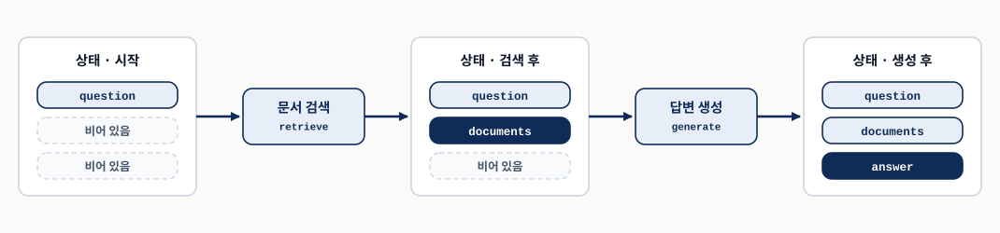
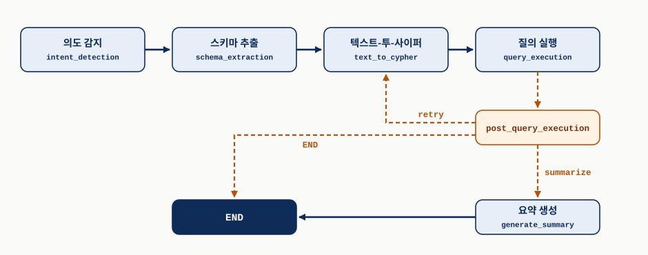
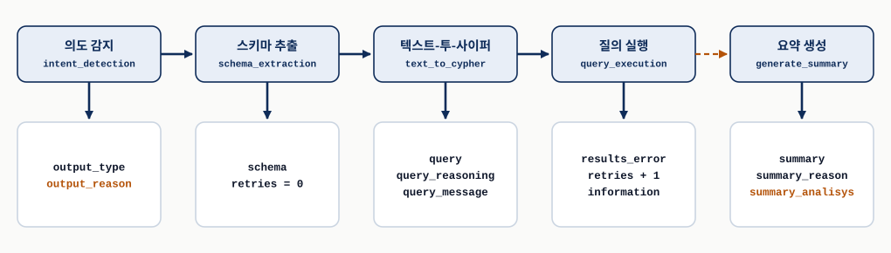
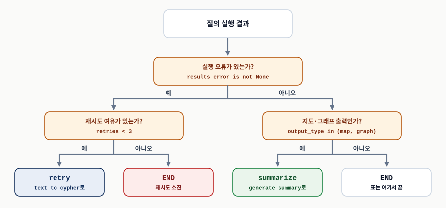
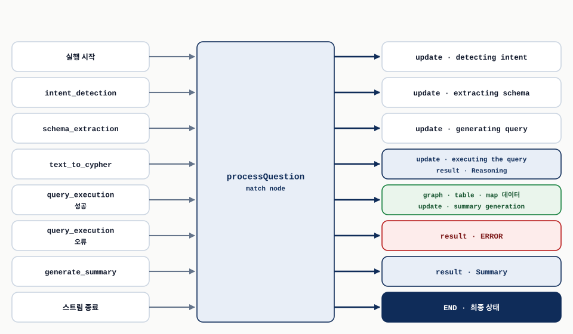
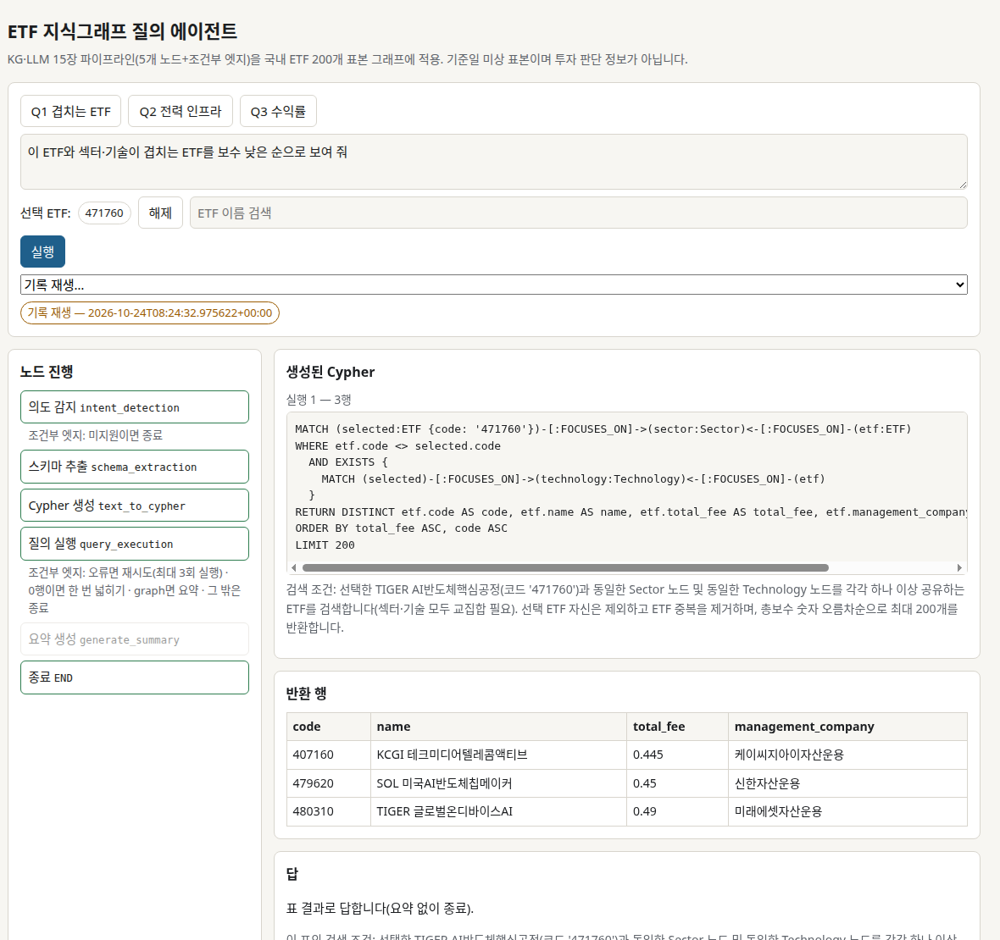

LangGraph로 QA 에이전트 구축
Chapter 15 · 책의 화면과 수사 사례 자리에 ETF 지식그래프 구현을 넣은 판
0. 핵심 요약
14장은 자연어 질문을 Cypher 질의로 바꾸는 과정을 의도 감지, 스키마 추출, 질의 생성, 질의 실행, 시각화, 요약의 단계로 나눴다. 15장은 그 설계를 실제로 돌아가는 애플리케이션으로 만든다. 단계 사이의 실행 흐름은 LangGraph가 조율하고, 사용자가 질문을 입력하고 결과를 보는 화면은 Streamlit이 맡는다. 저자들의 코드 저장소에 전체 구현과 설정 파일이 들어 있다.
장은 네 부분으로 이어진다. 먼저 파이프라인의 뼈대(설정·스키마 제공자, 상태, 에이전트, 이벤트 인터페이스)를 세우고(§15.1), 그 위에 화면을 붙이고(§15.2), 실제 수사 시나리오에서 질문 다섯 개를 이어 던져 시스템이 무엇을 할 수 있는지 보이고(§15.3), 이 구조를 어떻게 발전시킬지 정리한다(§15.4).
이 리포트는 ETF 구현을 이해하는 데 필요한 이론을 중심으로 쓴다. §15.1에서는 공유 상태, 다섯 노드의 역할, 질의 생성과 실행 후 라우팅, 이벤트 스트림을 자세히 다루고, 설정 제공자와 스키마 제공자(§15.1.2–15.1.3)는 원리와 ETF 구현의 대응만 짧게 적는다. §15.4는 저자들이 제시한 세 발전 경로를 표 하나로 요약한다. 책의 Streamlit 화면과 경찰 수사 사례는 각 절 첫머리에서 짧게 요약하고, 그 자리를 이번 회차에 만든 ETF 구현으로 채운다. §15.2에는 FastAPI+React 화면과 이벤트 처리를(이번 구현의 화면), §15.3에는 국내 ETF 200개 표본 그래프, 책에서 바꾼 것, 질문 세 개의 실행 기록을 실었다(질문 세 개).
- 구조 — 여러 단계가 서로를 직접 호출하지 않고 협업하려면 무엇을 공유해야 하는가?
- 분기 — 생성된 질의가 실패하거나 출력 형식이 다를 때 다음 단계는 어디서 결정되는가?
- 상호작용 — 수십 초 걸리는 파이프라인의 진행 상황을 화면에 어떻게 실시간으로 보여 주는가?
| 절 | 질문 | 이 장의 답 | 구현에서 볼 것 |
|---|---|---|---|
| 15.1 | 14장의 단계를 어떻게 실행 가능한 그래프로 만드는가? | 단계마다 에이전트 함수 하나, 함수끼리는 공유 상태로만 소통한다. | 설정·스키마 제공자, AgentState, 다섯 노드와 조건부 엣지, 이벤트 제너레이터. |
| 15.2 | 사용자는 이 파이프라인과 어떻게 대화하는가? | 책은 캔버스·선택·질문 입력·대화 이력으로 나눈 Streamlit 화면을 쓴다. 이 회차는 노드 진행과 Cypher·반환 행·답을 나란히 보이는 FastAPI+React 화면으로 바꿨다. | SSE로 받는 이벤트, 실행 기록과 기록 재생. |
| 15.3 | 실제 질문에서 쓸 만한가? | 책은 수사 질문 다섯 개로 사건을 좁혀 간다. 이 회차는 같은 다섯 노드를 국내 ETF 그래프에 옮겨 질문 세 개로 확인한다. | ETF 그래프, 미지원 종료와 0행 넓히기, 서버 읽기 전용, 질문 세 개의 실행 기록. |
| 15.4 | 이 토대를 어떻게 키우는가? | 관찰 가능성과 “전문가라면 무엇을 할까”라는 질문이 개선의 출발점이다. | 사용 기록에서 배우기, 스키마 처리 강화, 파인튜닝 경로. |
코드는 교재 Listing에서 설명에 필요한 줄만 발췌했다. 교재가 코드를 이미지로만 싣거나 교재 Listing과 저장소 코드가 어긋나는 곳은 교재 저장소의 15장 코드(src/ch15)와 대조했고, 해당 자리에 출처를 밝혀 표시했다. 실행 결과는 교재 저장소의 15장 노트북에 저장된 출력을 인용했으며, LLM이 관여하는 결과는 실행할 때마다 달라질 수 있다. 책의 Streamlit 앱과 §15.3의 수사 사례는 다시 실행하지 않았다. §15.2와 §15.3의 실행 기록과 화면은 모두 이번 ETF 구현을 2026-10-24에 실행한 결과다.
15.1 LangGraph 파이프라인 구축하기 — 상태 기반 협업의 무대
- LangGraph는 LLM으로 움직이는, 상태를 유지하는 다중 액터 애플리케이션을 만드는 라이브러리다.
- 구성요소는 데이터를 서로 직접 넘기지 않는다. 모두 하나의 공유 상태를 읽고, 자기 결과를 그 상태에 더한다.
- 워크플로는 유향 그래프다. 노드는 에이전트 함수, 엣지는 실행 순서이며, 엣지는 앞 노드의 출력에 따라 동적으로 정할 수 있다.
LangGraph는 LLM으로 구동되는 상태 유지형(stateful), 다중 액터(multi-actor) 애플리케이션을 만들기 위한 라이브러리다. 저자들은 14장의 질의 파이프라인처럼 여러 단계의 추론과 판단이 얽힌 워크플로를 조율하는 데 이 라이브러리가 잘 맞는다고 보고 고른다. 화면은 책에서는 Streamlit이, 이 회차의 ETF 구현에서는 FastAPI+React가 맡는다(§15.2). 이 절은 두 구현이 공통으로 쓰는 LangGraph의 원리만 다룬다.
작동 원리는 익숙한 예부터 보면 잡힌다. 문서를 검색해 질문에 답하는 기본 RAG(검색 증강 생성) 시스템은 문서 검색과 답변 생성 두 작업으로 이루어진다. 보통의 코드라면 검색 함수의 반환값을 생성 함수의 인자로 넘길 것이다. LangGraph에서는 그렇게 하지 않는다. 두 구성요소 모두 하나의 공유 상태(shared state)와만 상호작용한다. 상태는 사용자의 질문 하나를 담고 출발한다. 검색 에이전트는 상태에서 질문을 읽고 찾은 문서를 상태에 더한다. 생성 에이전트는 상태에 들어 있는 질문과 문서를 함께 읽어 답을 만들고, 그 답을 다시 상태에 더한다(그림 1).

왼쪽에서 오른쪽으로 읽으며 진하게 칠한 칸이 그 에이전트가 새로 쓴 필드다. 두 에이전트를 잇는 화살표는 실행 순서이고, 데이터는 상태를 거쳐서만 전달된다. 원본 좌표 그림 15.2 「LangGraph에서 에이전트 함수들 사이의 상태 기반 소통」의 의미를 시간 순서의 상태 변화로 다시 그렸다.저자들은 이 방식을 각 에이전트가 앞선 작업을 읽고 자기 결과를 덧붙이는 화이트보드에 비유한다. 비유가 맞지 않는 지점도 있다. 실제 화이트보드에서는 누구나 아무 때나 아무 칸이나 고칠 수 있지만, LangGraph의 에이전트 함수는 상태를 직접 고치지 않는다. 바뀐 필드만 담은 딕셔너리를 반환하고, 그 반환값을 상태에 합치는 일은 LangGraph가 한다. 또 누가 언제 쓰는지는 그래프의 엣지가 정한다. 그래서 에이전트끼리는 서로의 존재를 몰라도 되고(저자들의 표현으로 결합되지 않은 채), 상태는 워크플로 전체에서 일관되게 유지된다.
구조로 보면 LangGraph는 워크플로를 유향 그래프(directed graph)로 구현한다. 각 노드는 하나의 에이전트 함수이고, 이 함수는 전역 상태에서 필요한 데이터를 읽고 실행이 끝나면 자기 결과로 상태를 갱신한다. 엣지는 다음에 어느 노드를 실행할지 정한다. 여기서 중요한 기능이 동적 엣지 결정(dynamic edge resolution)이다. 다음 노드를 고정해 두지 않고 앞 에이전트의 출력을 보고 임의의 로직으로 고를 수 있어서, 워크플로가 조건에 따라 갈라질 수 있다. 이 장에서 질의 실행이 실패했는지에 따라 재시도할지 끝낼지를 고르는 자리(§15.1.5)가 이 기능을 쓴다. 코드로 보면 이 장의 파이프라인은 다음 노드를 LLM이 아니라 상태 필드를 검사하는 파이썬 조건문이 고르는 라우터형이다. ETF 구현도 같다.
15.1.1 시스템 아키텍처 개요 — 전문가 모방을 실행 가능한 그래프로
- 14장의 처리 단계는 각각 상태를 받아 갱신하는 에이전트 함수 하나로 대응된다.
- 주 흐름은 실선으로 이어지고, 질의 실행 결과에 따른 분기만 조건부 경로다.
- 파이프라인 바깥에는 설정 제공자, 스키마 제공자, 질문 처리 인터페이스가 각자 한 가지 책임을 맡는다.
14장의 전문가 모방 접근은 사람 분석가가 질문을 받고 하는 일을 순서대로 쪼갠 것이었다. 무엇을 보여 달라는 질문인지 파악하고, 그래프의 구조를 확인하고, 질의를 짜서 실행하고, 결과를 설명한다. 이 순서는 LangGraph의 에이전트/상태 구조에 그대로 들어맞는다. 각 처리 단계를 “상태를 받아서 갱신하는 함수”로 구현하면 되기 때문이다(그림 2).

실선은 항상 따라가는 주 흐름, 점선은 질의 실행 결과에 따라 하나만 고르는 조건부 경로다. 노드 안의 영문 이름은 코드에서 쓰는 노드 이름이다. 원본 좌표 그림 15.3 「지식 그래프 질의 파이프라인의 LangGraph 구현」의 실선·점선 구분을 유지해 다시 배치했다.그림을 14장의 구성과 비교하면 한 가지가 눈에 띈다. 14장의 단계 중 시각화는 그래프의 노드가 아니다. 파이프라인은 시각화 형식을 정하고(의도 감지) 그 형식에 맞춰 결과를 준비할 뿐이며, 실제로 그리는 일은 결과를 받은 프런트엔드가 한다. 그 결과를 넘기는 통로가 아래의 질문 처리 인터페이스다.
워크플로 바깥에는 구성요소가 세 개 더 있다. 설정 제공자는 프롬프트 템플릿과 그래프 주석을 한곳에서 공급하고(§15.1.2), 스키마 제공자는 데이터베이스 스키마를 LLM이 읽기 좋은 형태로 다듬으며(§15.1.3), 질문 처리 인터페이스는 워크플로의 실행을 화면이 받을 이벤트 스트림으로 바꾼다(§15.1.6). ETF 구현도 같은 네 덩어리로 나뉜다. 설정은 config.yaml, 스키마는 Neo4j 내장 프로시저를 부르는 고정 질의, 인터페이스는 SSE를 내보내는 FastAPI 엔드포인트가 맡는다.
15.1.2 파이프라인 구성요소 설정하기 — 텍스트 자원을 한곳에 모으기
- 프롬프트 템플릿과 그래프 주석처럼 길어지기 쉬운 텍스트를 코드 밖의 설정 구성요소 한곳에 모은다.
- 에이전트는 단계 이름과 채울 값만 넘기고 완성된 프롬프트를 받는다.
질의응답 시스템은 단계마다 쓰는 프롬프트 템플릿과 질의 생성을 돕는 그래프 주석에 기대어 돈다. 이 텍스트를 코드 안에 문자열로 박아 두면 금세 구현 코드보다 길어지므로, 저자들은 이를 설정 구성요소 한곳에 모은다. 템플릿은 Jinja2로 쓰고, 설정 파일에는 질의 생성 때 지킬 도메인 규칙(notes), 질문·정답 Cypher·판단 이유를 묶은 예시(examples), 단계별 템플릿 경로(prompts)를 둔다. 에이전트는 “어떤 이름의 프롬프트를 어떤 값으로”만 요청하고, 템플릿이 어떻게 조립되는지는 알지 못한다(표 2).
| 원서 좌표 | 책의 구현 | ETF 구현 |
|---|---|---|
| Listing 15.1 설정 파일 예시 | chain_config.yaml의 notes·examples·prompts. 노트에는 수사 그래프의 업무 정의(“전과자는 범죄 노드에 연결된 사람”)가 들어 있다. | config.yaml의 스키마 설명, 숨길 속성, “없는 데이터”(가격·수익률·구성 종목 등) 목록. 업무 정의(“유사 ETF는 섹터와 기술을 모두 공유”)를 설명에 적었다. |
| Listing 15.2 설정 구성요소 | ChainConfiguration.get_prompt가 템플릿 파일을 읽어 값을 채우고, getAnnotations가 노트와 예시를 돌려준다. | 노드 함수 안에 짧은 시스템 지시를 두고, 질문·스키마·설정 값을 JSON으로 넘긴다. 템플릿 파일과 예시 묶음은 쓰지 않았다. |
15.1.3 스키마 번역 서비스 — 기술 스키마를 개념 스키마로 다듬기
- LLM에게 필요한 것은 개념 스키마인데, 프로그램으로 얻을 수 있는 것은 기술 스키마뿐이다.
- 스킵 리스트로 기술 요소를 걸러 내고, 설명 섹션으로 업무 의미를 덧붙인다.
질의를 짜는 데 필요한 것은 사람이 이해하는 업무 수준의 구조, 곧 개념 스키마(conceptual schema)다. 그런데 프로그램으로 읽을 수 있는 것은 데이터베이스가 실제로 저장한 구조, 곧 기술 스키마(technical schema)뿐이다. 기술 스키마에는 내부 ID나 적재 과정의 중간 산물이 섞여 있고, 코드값의 뜻은 적혀 있지 않다. 저자들은 이 간극을 설정으로 메운다. 스킵 리스트로 업무 개념이 아닌 요소를 빼고, 설명 섹션으로 남은 노드와 속성에 업무 의미를 붙인다.
교재 저장소 노트북의 저장 출력을 보면, 시드 그래프에 설정을 적용했을 때 속성은 96개에서 87개로 줄었지만 스키마 텍스트는 3,595자에서 4,342자로 늘었다. 지운 분량보다 붙인 설명이 길었기 때문이다. 스키마 번역은 프롬프트를 줄이는 압축이 아니라, 무관한 요소를 걷어 내고 남은 요소에 의미를 붙이는 일이다(표 3).
| 원서 좌표 | 책의 구현 | ETF 구현 |
|---|---|---|
| Listing 15.3 스키마 제공자: 데이터 모델 | Property·Node 데이터클래스가 속성과 노드를 (:Label /* 설명 */ { ... }) 모양의 텍스트로 만든다. | 노드·관계 속성 목록을 JSON 그대로 넘기고, 데이터 설명은 config.yaml의 자연어 설명으로 붙인다. |
| Listing 15.4 스키마 제공자 메인 클래스 | apoc.meta.schema로 추출 → 스킵 리스트로 거르기 → 설명 붙이기. | APOC 없이 db.schema.nodeTypeProperties()·relTypeProperties()를 고정 질의로 부르고, 긴 본문 속성(basic_info 등)은 뺀다. |
15.1.4 상태 관리 설계 — 에이전트들이 함께 쓰는 공유 메모리
- 상태 객체는 에이전트들이 읽고 쓰는 공유 메모리이며, LangGraph에서 에이전트끼리 소통하는 유일한 통로다.
- 각 에이전트가 상태의 정해진 부분을 채우므로 파이프라인 전체에 책임의 사슬이 생긴다.
- 상태는 데이터만 나르지 않고 라우팅 결정과 오류 처리에 필요한 맥락도 함께 들고 다닌다.
LangGraph에서 에이전트 사이의 소통은 전부 상태 객체(state object)를 거친다. 상태 객체는 에이전트들이 읽고 쓰는 공유 메모리 공간이고, 각 에이전트는 이 상태의 특정 부분을 채울 책임을 진다. 어느 필드를 누가 채우는지가 정해져 있으므로, 결과가 이상할 때 어느 단계에서 틀렸는지를 필드 이름으로 거슬러 올라갈 수 있다. 저자들은 이것을 책임의 사슬이라 부른다.
Listing 15.5 파이프라인 에이전트의 상태
상태는 파이썬 TypedDict로 선언한다. 필드 열세 개를 저자들의 묶음대로 줄을 나눠 옮겼다.
class AgentState(TypedDict):
question: str # 질문 입력
output_type: str; output_type_reason: str # 의도 감지 결과
schema: str # 스키마 정보
query: str; query_reasoning: str; query_message: str # 질의 생성
results_error: list # 오류 처리
summary: str; summary_reason: str; summary_analysis: bool # 요약 생성
information: str; retries: int # 질의 재시도TypedDict는 실행 시점에는 평범한 딕셔너리이고, 키 이름과 값의 타입을 선언으로 남겨 둔다. LangGraph의 StateGraph는 이 선언으로 상태가 가질 필드를 안다(§15.1.5의 Listing 15.12). 원서는 한 줄에 필드 하나씩 쓰지만, 여기서는 묶음을 보이려고 세미콜론으로 이었다. 파이썬 클래스 본문에서 세미콜론으로 이은 선언은 따로 쓴 선언과 같다.
필드를 묶음별로 읽으면 파이프라인의 진행이 그대로 보인다. 질문 하나로 시작해서, 의도와 그 근거가 붙고, 스키마가 붙고, 질의와 그 근거가 붙고, 실행 오류가 있으면 기록되고, 필요하면 요약이 붙는다. 저자들이 “각 필드가 파이프라인의 진행에 관한 이야기를 하나씩 들려준다”고 쓰는 이유다. 마지막 묶음인 information과 retries는 결과물이 아니라 흐름 제어용이다. 재시도할지 정하는 판정과 재시도 때 LLM에게 줄 오류 맥락이 여기에 있다(표 4).
| 묶음 | Listing 15.5 선언 | 저장소에서 실제로 쓰는 키 · 쓰는 곳 | 읽는 곳 |
|---|---|---|---|
| 질문 입력 | question | question · 실행 시작 입력 | 의도 감지·질의 생성·요약 템플릿, 화면 이력의 질문 말풍선 |
| 의도 감지 결과 | output_type | output_type · 의도 감지 에이전트 | 질의 실행, 실행 후 라우팅, 질의 생성·요약 템플릿, 이벤트 인터페이스(시각화 이벤트의 타입), 화면 추론 칸 |
output_type_reason | 선언만 있고 채우는 곳이 없다. 의도 감지 에이전트는 근거를 output_reason 키로 돌려준다. | 두 키 모두 읽는 곳이 없다. | |
| 스키마 정보 | schema | schema · 스키마 추출 에이전트 | 질의 생성 템플릿 |
| 질의 생성 | query | query · 텍스트-투-사이퍼 에이전트 | 질의 실행, 요약 템플릿, 화면의 접힌 질의 칸 |
query_reasoning | query_reasoning · 텍스트-투-사이퍼 에이전트 | 이벤트 인터페이스(Reasoning result 이벤트), 화면 추론 칸 | |
query_message | query_message · 텍스트-투-사이퍼 에이전트 | 화면의 접힌 질의 칸(JSON 그대로 표시) | |
| 오류 처리 | results_error | results_error · 질의 실행 에이전트 | 실행 후 라우팅, 이벤트 인터페이스(ERROR result 이벤트) |
| 요약 생성 | summary | summary · 요약 생성 에이전트 | 이벤트 인터페이스(Summary result 이벤트), 화면 요약 |
summary_reason | summary_reason · 요약 생성 에이전트 | 화면의 접힌 디버깅 칸(값 그대로 표시) | |
summary_analysis | 저장소는 선언과 반환 모두 summary_analisys · 요약 생성 에이전트 | 화면의 접힌 디버깅 칸이 값 그대로 표시한다. 라우팅이나 다른 에이전트는 읽지 않는다. | |
| 질의 재시도 | information | information · 질의 실행 에이전트 | 질의 생성 템플릿(질문 뒤에 붙음) |
retries | retries · 스키마 추출(0으로 초기화), 질의 실행(1 증가) | 실행 후 라우팅, 질의 실행(다음 값 계산) |
표에서 보듯 상태는 에이전트 사이에서 데이터를 나르는 데 그치지 않는다. output_type은 질의 생성 프롬프트의 요구 사항을 바꾸고, 결과를 표로 바꿀지 레코드로 둘지를 정하고, 요약 단계로 갈지를 정한다. 저자들의 표현대로, 상태는 라우팅 결정을 내리고 오류를 부드럽게 처리하는 데 필요한 맥락까지 유지한다.
15.1.5 파이프라인 에이전트 구현 — 단계마다 전문 에이전트 하나
- 에이전트는 다섯이다. 모두
AgentState를 받아 자기가 채울 필드만 딕셔너리로 돌려준다. - LLM을 부르는 세 에이전트는 설정에서 프롬프트를 받아 공통 함수
run_prompt로 실행하고 JSON 응답을 필드에 옮긴다. - 실행 후 라우팅은 에이전트가 아니라 동적 엣지다. 오류면 최대 세 번까지 실행을 시도하고, 성공하면 출력 형식에 따라 요약 여부를 정한다.
질의응답의 각 단계는 전문화된 에이전트 하나로 구현된다. 다섯 에이전트가 정해진 순서로 실행되고, 각자 상태의 일부를 채운다(그림 3). 이 절은 에이전트를 하나씩 만들고, 마지막에 그래프로 조립한다.

윗줄은 실행 순서, 아래 상자는 각 에이전트가 반환해 상태에 합쳐지는 필드다. 점선은 조건이 맞을 때만 지나는 경로이고, 재시도 경로는 그림 2에 있다. 주황색 필드는 Listing 15.5의 선언 이름과 다른 반환 이름이다. 원본 좌표 그림 15.7 「지식 전문가 모방 그래프 질의 파이프라인의 LangGraph 구현」을 이 절의 Listing에 맞춰 필드 중심으로 다시 구성했다.의도 감지 에이전트
파이프라인의 진입점이다. 사용자의 질문만 보고, 이 질문의 답을 어떤 형식으로 보여 줄지 정한다. 14장에서 다룬 의도 감지 프롬프트를 그대로 쓰며, 결과로 상태의 두 필드를 채운다. output_type은 정해진 시각화 형식(표, 그래프, 지도)이고, 근거 필드는 그 형식을 고른 이유다.
Listing 15.6 의도 감지 에이전트 구현
모든 LLM 호출이 거치는 공통 함수 run_prompt와, 그것을 처음 쓰는 intent_detection이다. 로그 줄은 뺐다.
def run_prompt(self, prompt, system=""):
messages = [HumanMessage(content=prompt)]
if self.system or system:
system = self.system if not system else system
messages = [SystemMessage(content=system)] + messages
message = self.model.invoke(messages)
payload = re.sub(r'^\s*```json\s*|\s*```\s*$', '',
message.content, flags=re.DOTALL)
return json5.loads(payload)
def intent_detection(self, state: AgentState):
system, prompt = self.config.get_prompt(
"intent_detection", question=state["question"])
results = self.run_prompt(prompt, system)
return {"output_type": results["type"],
"output_reason": results["reason"]}run_prompt는 프롬프트를 사람 메시지로 감싸고, 시스템 메시지가 있으면 앞에 붙여 모델을 한 번 호출한다. 응답 처리에 두 겹의 방어가 있다. LLM이 JSON을 ```json ... ``` 코드 펜스로 감싸 돌려주는 경우가 흔하므로 정규식으로 펜스를 벗기고, 후행 쉼표나 작은따옴표 같은 사소한 형식 흔들림을 받아 주는 JSON5 파서로 읽는다. intent_detection은 질문 하나로 의도 감지 템플릿을 채워 실행하고, 응답 JSON의 type과 reason을 상태 필드로 옮긴다. 반환하는 딕셔너리에 question이나 다른 필드는 없다. 자기 몫만 돌려주면 나머지는 LangGraph가 기존 상태에 합친다.
스키마 추출 에이전트
§15.1.3의 Neo4jSchema를 써서 지식 그래프와 LLM 구성요소 사이를 잇는다. 그래프 스키마를 LLM 친화적 텍스트로 바꿔 상태에 넣어 두면, 뒤따르는 에이전트가 질의를 짜고 추론할 때 그것을 쓴다.
Listing 15.7 스키마 추출 에이전트
원서는 이 Listing을 코드 이미지로만 싣는다. 아래는 교재 저장소의 같은 메서드(chains/investigator.py)를 옮긴 것이다.
def schema_extraction(self, state: AgentState):
assert self.neo4j_schema is not None, "you need to provide a neo4j schema"
self.neo4j_schema.get_schema()
self.neo4j_schema.apply_configuration()
return {"schema": str(self.neo4j_schema), "retries": 0}실제 작업은 Neo4jSchema 인스턴스가 한다. 에이전트는 스키마 객체가 주입되어 있는지 먼저 확인하고, 현재 스키마를 가져와 설정을 적용한 뒤, 그 결과를 문자열로 바꿔 schema에 넣는다. 함께 retries를 0으로 초기화해, 뒤에서 일어날 수 있는 질의 재시도를 셀 준비를 한다.
코드에서 읽히는 비용이 하나 있다. 이 에이전트는 질문마다 실행되므로 apoc.meta.schema도 질문마다 데이터베이스 전체를 대상으로 다시 불린다. 노트북의 시드 그래프에서는 이 호출이 0.03초였다. 그래프가 크면 이 단계의 시간이 늘어날 수 있으므로, 스키마가 자주 바뀌지 않는 환경이라면 결과를 캐시하는 선택지를 검토할 만하다(AIML Quant 보충).
텍스트-투-사이퍼 에이전트
자연어 질문을 Cypher 질의로 바꾼다. 그래프 스키마뿐 아니라 화면에서 사용자가 지금 선택해 둔 노드도 함께 고려한다. 이 맥락 인식 덕분에 사용자는 선택한 노드를 일일이 설명하지 않고 “선택한 사건”처럼 가리킬 수 있다(14장 §14.7.2). 이를 위해 에이전트는 프롬프트를 실행하기 전에 두 가지 정보를 상태에 덧붙인다. 설정 제공자의 주석(노트와 예시)과 시각화 화면의 현재 선택이다.
Listing 15.8 텍스트-투-사이퍼 에이전트
def text_to_cypher(self, state: AgentState):
extra = {"annotations": self.config.getAnnotations(),
"selection": self.selection}
params = dict(state) | extra
system, prompt = self.config.get_prompt("text_to_cypher", **params)
results = self.run_prompt(prompt, system)
return {"query": results["query"],
"query_reasoning": results["reasoning"],
"query_message": json.dumps(results)}dict(state) | extra는 두 딕셔너리를 합치는 파이썬 문법이다. 현재 상태의 모든 필드(question, schema, output_type, information 등)에 주석과 선택을 더한 하나의 딕셔너리가 그대로 템플릿 변수가 된다. 응답에서 Cypher 질의는 query에, 그 질의를 짠 근거는 query_reasoning에 넣고, 디버깅용으로 LLM 응답 전체를 JSON 문자열로 query_message에 남긴다.
선택(self.selection)은 상태 필드가 아니라 에이전트 객체의 속성이라는 점도 눈여겨볼 만하다. 선택은 질문을 처리하는 동안 바뀌지 않는 입력이므로, §15.1.6의 인터페이스가 실행 직전에 객체에 넣어 두고 에이전트들은 거기서 읽는다.
교재 저장소의 질의 생성 템플릿(text_to_cypher.template)은 질문 자리를 question 다음에 information을 붙여 채운다. 처음 실행할 때는 information이 없어 질문만 들어가고, 재시도할 때는 “이 질의를 시도했고 이런 오류가 났다”는 문장이 질문 뒤에 붙는다. 상태 전체를 템플릿 변수로 넘기는 dict(state) 한 줄이 이 피드백 경로를 만든다.
질의 실행 에이전트
상태에 담긴 질의를 실행하고, 감지된 의도에 맞춰 결과 형태를 정하며, 실패를 붙잡아 재시도에 필요한 정보를 남긴다.
Listing 15.9 질의 실행 에이전트
def query_execution(self, state: AgentState):
try:
results = self.neo4j_schema.run(state["query"])
if state["output_type"] in {"graph", "map"}:
self.results = list(results) # 레코드 그대로
else:
self.results = results.to_df() # pandas DataFrame
results_error, information = None, ""
except neo4j.exceptions.ClientError as e:
self.results = None
results_error = str(e)
information = f"We tried: {state['query']} and we got: {e}"
retries = state.get("retries", 0) + 1
return {"results_error": results_error,
"retries": retries, "information": information}성공하면 결과 형태가 의도에 따라 갈린다. 그래프나 지도로 그릴 결과는 노드와 경로를 그대로 써야 하므로 레코드 리스트로 두고, 표로 보여 줄 결과는 Neo4j 드라이버의 변환 기능으로 pandas DataFrame으로 바꾼다. 결과 자체는 상태가 아니라 에이전트 객체의 self.results에 둔다. 실패하면, 저자들 설명으로는 주로 문법 오류나 스키마 불일치 때문에, 오류를 붙잡아 로그에 남기고, 시도한 질의와 오류 설명을 함께 담은 문장을 information에 만든다. information 문자열은 원서에서 여러 줄이지만 한 줄로 줄였다.
상태에는 세 필드가 갱신된다. results_error는 실패했을 때 오류 메시지, 성공했을 때 None이다. retries는 실행 시도 횟수를 센다. 발췌에서 보이듯 이 줄은 try 밖에 있어서 성공한 실행도 한 번으로 센다. 스키마 추출이 0으로 맞춰 두었으므로 첫 실행 뒤에는 1, 두 번째 실행 뒤에는 2가 된다. information은 다음 재시도에서 LLM에게 줄 오류 맥락이다. 이 정보를 받아 다음 행선지를 정하는 것이 바로 다음의 라우팅 로직이다.
질의 실행 후 라우팅
지금까지의 구성요소와 달리 이것은 에이전트가 아니다. 상태를 갱신하지 않고 “다음에 어디로 갈지”만 정하는 함수이며, LangGraph 파이프라인에서 동적 엣지로 쓰인다(그림 4).

위에서 아래로 두 번의 예·아니오를 따라가면 맨 아래 네 칸 중 하나에 닿는다. 맨 아래 칸의 영문 단어가 라우팅 함수가 돌려주는 문자열이다. 원본 좌표 그림 15.8 「QA 파이프라인의 질의 실행 후 라우팅 로직」을 판정 나무로 다시 그렸다.Listing 15.10 실행 후 동적 엣지
def post_query_execution(self, state: AgentState):
if state["results_error"] is not None:
if state["retries"] < 3:
return "retry"
else:
return "END"
if state["output_type"] in ("map", "graph"):
return "summarize"
else:
return "END"반환값은 다음 노드 이름이 아니라 "retry", "summarize", "END" 같은 문자열이다. 이 문자열을 실제 노드로 바꾸는 표는 그래프를 조립할 때 따로 준다(Listing 15.12). 로그 줄은 뺐다.
판정은 두 갈래다. 먼저 results_error로 실패 여부를 본다. 실패했다면 재시도 기회가 남았는지 보는데, 저자들은 이 장치로 최대 세 번까지 질의 실행을 시도할 수 있다고 설명한다. 앞에서 본 대로 retries가 실행 횟수이므로 첫 실행과 두 번의 재시도를 합쳐 세 번이다. 이 덕분에 일시적인 실패나, LLM이 올바른 질의를 내기까지 몇 번 시도가 필요한 경우를 견딘다. 성공했다면 output_type을 본다. 지도나 그래프는 추가 맥락과 설명이 있으면 이해가 쉬워지므로 요약 단계로 보내고, 표는 대개 그 자체로 설명이 되므로 바로 끝낸다.
results_error | retries | output_type | 반환값 |
|---|---|---|---|
None | 1–4 | graph | summarize |
None | 1–4 | table | END |
| 오류 문자열 | 1, 2 | graph, table | retry |
| 오류 문자열 | 3, 4 | graph, table | END |
노트북은 오류 유무 2가지, retries 1–4, 출력 형식 2가지를 곱한 16가지 조합을 모두 넣어 보았다(표 5). retry가 나오는 것은 오류가 있고 retries가 3보다 작은 네 조합뿐이다. 오류가 나면 출력 형식은 판정에 쓰이지 않는다. 저자들은 이 함수가 단순해 보여도 전체 파이프라인의 동작을 조율하는 데 중요하다고 강조하며, 실행 결과와 사용자 의도 양쪽에 기반한 흐름 제어를 LangGraph의 핵심 기능으로 꼽는다.
요약 생성 에이전트
파이프라인의 마지막 에이전트이며 그래프와 지도 결과에만 실행된다. 질의 결과와 선택을 기존 상태에 합쳐 요약 프롬프트의 값을 채우고, 설정 제공자가 준 템플릿을 LLM으로 실행한다.
Listing 15.11 요약 생성 에이전트
def generate_summary(self, state: AgentState):
extra = {"records": self.results, "selection": self.selection}
params = dict(state) | extra
system, prompt = self.config.get_prompt("generate_summary", **params)
results = self.run_prompt(prompt, system)
return {"summary": results["summary"],
"summary_reason": results["reasoning"],
"summary_analisys": results["results_analysis"]}구조는 텍스트-투-사이퍼 에이전트와 같다. 다른 점은 덧붙이는 값이다. 질의 실행이 self.results에 남긴 레코드가 records로 들어간다. 결과는 요약 본문(summary), 요약의 근거(summary_reason), 추가 분석을 했는지 나타내는 플래그 세 가지다. 플래그의 키 이름 철자는 §15.1.4의 코드 대조에서 다뤘다.
교재 저장소의 요약 템플릿이 받는 값은 질문, 생성된 질의, 출력 형식, 레코드, 선택이다. 템플릿은 사용자가 결과를 화면에서 그래프로도 본다는 점을 알려 주고, 반환된 데이터 중 질문과 무관한 것을 걸러 사실만 요약하라고 지시한다. 저자들의 설명으로는 이 요약이 붙으면서 원래의 사용자 질문이 검색된 정보에 대한 의미 있는 설명으로 바뀌고, 파이프라인이 끝난다.
파이프라인 조립
지금까지 만든 함수들을 하나의 그래프로 잇는다. 이 조립 코드가 그림 2를 그대로 코드로 옮긴 것이다.
Listing 15.12 LangGraph 파이프라인 그래프 구축
graph = StateGraph(AgentState)
graph.add_node("intent_detection", self.intent_detection)
graph.add_edge("intent_detection", "schema_extraction")
# schema_extraction → text_to_cypher → query_execution 도 같은 방식으로 잇는다
graph.add_conditional_edges("query_execution",
self.post_query_execution,
{"retry": "text_to_cypher",
"summarize": "generate_summary",
"END": END})
graph.add_node("generate_summary", self.generate_summary)
graph.add_edge("generate_summary", END)
graph.set_entry_point("intent_detection")
self.graph = graph.compile(checkpointer=self.memory)StateGraph(AgentState)가 상태 선언을 받아 그래프의 틀을 만든다. add_node는 이름과 함수를 묶어 노드로 등록하고, add_edge는 무조건 이어지는 실선 엣지를 만든다. add_conditional_edges는 출발 노드, 라우팅 함수, 그리고 라우팅 함수가 돌려줄 문자열을 실제 목적지로 바꾸는 표를 받는다. 여기서 "retry"가 text_to_cypher로 이어지므로 재시도 루프가 생긴다. END는 LangGraph가 제공하는 종료 지점이다. set_entry_point로 첫 노드를 정하고, compile로 실행 가능한 그래프를 만든다.
저자들은 StateGraph를 AgentState 타입으로 초기화해 파이프라인 전체의 타입 안전성을 확보한다고 설명한다. 각 에이전트는 노드로, 단계 사이의 표준 흐름은 엣지로 들어가고, 오류 처리와 시각화 형식에 따른 분기까지 하나의 그래프 안에 담긴다.
15.1.6 파이프라인 통합 계층 — 실행을 이벤트 스트림으로 바꾸기
- invoke 모드는 끝날 때까지 아무 피드백이 없고, stream 모드의 갱신을 직접 다루면 앱 코드가 복잡해진다.
- 제너레이터 함수 하나가 파이프라인 실행을 잘 정의된 이벤트의 흐름으로 바꾼다.
- 모든 이벤트는 (응답 타입, 응답 내용, 현재 상태) 세 항목으로 된 튜플이고, 타입은 update, result, 시각화 이벤트의 세 부류와 종료 신호 END로 나뉜다.
파이프라인이 완성되었으니 애플리케이션이 그것과 어떻게 상호작용할지 정해야 한다. 가장 단순한 방법은 LangGraph의 invoke 모드다. 초기 상태를 주고 파이프라인이 끝나면 최종 결과를 받는다. 문제는 사용자 경험이다. 질문을 보낸 사용자는 뒤에서 무슨 일이 일어나는지 모른 채 오래 기다릴 수 있다. 노트북에 저장된 실행에서 질문 하나가 끝까지 도는 데 11초에서 42초가 걸렸으니, 이 기다림은 실제로 길다.
LangGraph에는 중간 단계를 볼 수 있는 stream 모드도 있다. 하지만 그 갱신을 앱 코드가 직접 다루면 앱 로직이 복잡해진다. 저자들은 그 사이에 인터페이스 계층을 하나 둔다. 파이프라인 실행을 프런트엔드가 쉽게 소비할 수 있는, 잘 정의된 이벤트의 흐름으로 바꾸는 계층이다(그림 5).

한 행이 하나의 대응이다. 왼쪽은 LangGraph가 알려 주는 일, 오른쪽은 프런트엔드가 받는 이벤트다. 색은 이벤트 종류를 구분하며, 초록 행의 summary generation 알림은 출력 형식이 그래프나 지도일 때만 나온다. 원본 좌표 그림 15.9 「파이프라인 통합 아키텍처」를 Listing 15.13의 분기에 맞춰 행 단위 대응으로 다시 그렸다.인터페이스의 핵심은 질문을 받아 이벤트를 차례로 내보내는(yield) 제너레이터 함수다. 저자들이 제너레이터를 고른 이유는 코드 흐름을 위에서 아래로 읽히는 단순한 선형 구조로 유지하면서도 중간 결과를 바로바로 내보낼 수 있기 때문이다. 호출하는 쪽은 for 문으로 이벤트를 하나씩 받아 처리하면 된다.
Listing 15.13 질문 처리 인터페이스 함수
준비 부분과 match 분기의 대표 사례만 남긴 발췌다. 로그 줄과 나머지 분기는 그림 5에 정리했다.
def processQuestion(question, selection=None):
config = {"configurable": {"thread_id": uuid.uuid4().hex}}
pipeline.selection = ([{"labels": list(node.labels)[0],
"properties": dict(node)} for node in selection]
if selection is not None else [])
results = pipeline.graph.stream({"question": question}, config=config,
stream_mode="updates")
yield "update", "*detecting intent...*", {"question": question}
for result in results:
node, value = list(result.items())[0]
current_state = pipeline.graph.get_state(config).values
match node:
case "text_to_cypher":
yield "update", "*executing the query...*", current_state
yield "result", ("Reasoning", value["query_reasoning"]), current_state
case "query_execution":
if value["results_error"]:
yield "result", ("ERROR", value["results_error"]), current_state
else:
yield current_state["output_type"], pipeline.results, current_state
...
yield "END", current_state, current_state # 마지막에 get_state로 다시 읽은 최종 상태준비 단계에서 실행마다 새 thread_id를 만들어 체크포인터가 이번 실행의 상태를 따로 보관하게 하고, 화면에서 넘어온 노드 객체를 라벨과 속성만 담은 딕셔너리로 바꿔 pipeline.selection에 넣는다. 원서는 if/else 두 갈래로 쓰지만 여기서는 한 식으로 줄였다. stream_mode="updates"로 실행하면 LangGraph는 노드가 끝날 때마다 {노드 이름: 그 노드가 바꾼 필드}만 돌려준다. 그래서 함수는 노드 이름(node)과 변경분(value)을 꺼내고, 이벤트에 실을 전체 상태는 get_state(config)로 따로 읽는다.
match node의 각 case가 파이프라인 단계 하나에 대응한다. 노드가 끝나면 다음 단계를 알리는 update를 내보낸다. 텍스트-투-사이퍼가 끝나면 질의의 근거를 result로 함께 내보낸다. 질의 실행이 실패하면 오류 메시지를 result로, 성공하면 출력 형식 이름(graph, table, map)을 타입으로 한 시각화 이벤트에 결과 데이터를 실어 보낸다. 그래프나 지도라면 요약이 시작된다는 update를 덧붙인다. 요약이 끝나면 요약문을 result로 보내고, 스트림이 끝나면 최종 상태를 담은 END를 보낸다.
이벤트는 모두 같은 구조를 따른다. 응답 타입, 응답 내용, 현재 파이프라인 상태 세 항목으로 된 튜플이다. 응답 타입은 세 부류와 종료 신호(END)로 나뉜다(표 6).
| 부류 | 응답 타입 | 응답 내용 | 프런트엔드에 주는 것 |
|---|---|---|---|
| update 이벤트 | "update" | “detecting intent”, “generating query” 같은 짧은 진행 문구 | 지금 어느 단계가 실행 중인지 |
| result 이벤트 | "result" | (제목, 텍스트) 쌍. 질의 근거, 오류, 요약 | 시스템이 어떻게 결론에 이르렀는지 |
| 시각화 이벤트 | "graph", "table", "map" 등 | 질의 결과 데이터(레코드 또는 DataFrame) | 결과를 가장 알맞은 형식으로 그릴 재료 |
| 종료 | "END" | 최종 상태 | 한 질문의 처리가 끝났다는 신호와 전체 기록 |
모든 이벤트에 현재 상태를 함께 싣는 것은 의도된 선택이다. 프런트엔드가 그 정보를 어떻게 쓸지 인터페이스가 미리 가정하지 않고, 필요한 맥락을 전부 넘긴다. 인터페이스는 실행을 이벤트로 바꾸는 일에만 집중하고, 무엇을 어떻게 보여 줄지는 프런트엔드가 정한다. 저자들은 이 분리 덕분에 유지보수성과 유연성을 잃지 않고도 풍부한 상호작용을 뒷받침하는 토대가 생긴다고 정리한다. 그 토대 위에 화면을 올리는 일이 §15.2다.
15.2 Streamlit 애플리케이션 — 사용자가 시스템과 대화하는 창
- 책은 파이프라인을 Streamlit 앱 하나로 감싼다. 이 절은 그 설계를 요약한 뒤, 같은 요구를 이번 ETF 구현의 FastAPI+React 화면이 어떻게 받는지 설명한다.
- 화면은 §15.1.6의 이벤트를 서버 전송 이벤트(SSE)로 받아, 왼쪽에 노드 진행을, 오른쪽에 Cypher·반환 행·답을 그린다.
- 책이 나눈 임시 표시와 영구 이력은 실행마다 남기는 이벤트 기록과 “기록 재생”으로 옮겼다.
저자들은 화면이 갖출 요구를 전문가 모방 접근에서 끌어낸다. 그래프의 노드와 관계를 둘러보고 고를 수 있어야 하고, 여러 단계를 거치는 동안 진행이 보여야 하며, 자연어로 주고받는 채팅이어야 하고, 무엇을 선택했고 처리가 어디까지 왔는지를 기억해야 한다. 이 요구를 받칠 도구로 Streamlit을 고른 가장 큰 이유는 파이썬 우선 구조다. 화면과 파이프라인이 같은 파이썬 프로세스에서 돌아서 별도의 API 없이 §15.1.6의 제너레이터를 for 문으로 바로 돌릴 수 있다. 저자들은 이 선택이 시제품과 시연 단계에 맞고, 운영에는 더 전문화된 화면이 필요할 수 있다고 덧붙인다.
책의 화면은 가운데 그래프 캔버스를 선택 열, 질문 입력란, 대화 이력이 둘러싼다. 질문을 보내면 이벤트가 올 때마다 자리표시자(나중에 내용을 바꿔 끼우는 빈 화면 요소)에 진행이 잠깐 보이고, MessageHistory가 메시지의 상태를 모았다가 END 이벤트에서 화면을 다시 그려 영구 이력으로 바꾼다. 표 7은 원서의 하위 절과 Listing이 보이는 것과, 이번 구현에서 그 자리를 맡는 것을 나란히 적었다.
| 원서 좌표 | 원서가 보이는 것 | 이번 구현에서 맡는 것 |
|---|---|---|
| 15.2.1 애플리케이션 개요 — 화면 구성과 각 영역의 역할 | 그래프 캔버스, 선택 열, 질문 입력, 대화 이력. 고른 노드를 질문에서 “선택한 범죄”처럼 가리킨다. | 질문 입력과 ETF 선택 칸, 왼쪽 노드 진행, 오른쪽 Cypher·검색 조건·반환 행·답(그림 6). 선택은 ETF 하나로 줄였고, 그래프 캔버스와 지도는 만들지 않았다. |
| 15.2.2 LangGraph 통합 — 실시간 상호작용을 만드는 이벤트 처리 | 이벤트가 올 때마다 화면을 갱신하고, END에서 영구 이력으로 마감한다. | 같은 이벤트를 SSE로 받아, 실시간 실행과 기록 재생이 같은 함수로 화면 상태를 갱신한다(표 8). |
| Listing 15.14 메시지 이력 구현 | 지금 메시지에 상태를 조금씩 합치고, 끝나면 새 메시지를 연다. 메시지에 든 키를 보고 추론·표·지도·Cypher·요약을 그린다. | 실행 하나의 이벤트를 받은 순서대로 파일 한 개에 남긴다. 화면은 이 기록을 다시 읽어 같은 순서로 그린다. |
| Listing 15.15 사용자 입력 핸들러 | 선택한 노드와 질문을 processQuestion에 넘기고, 응답 타입별로 match 분기한다. | 브라우저가 질문과 선택한 ETF 코드를 POST로 보내고, 응답 스트림을 읽어 이벤트 타입별로 분기한다. |
이번 구현의 화면 — 답과 근거를 한 화면에
화면은 FastAPI 서버가 내보내는 페이지 하나다. React와 htm(JSX 대신 쓰는 작은 템플릿 라이브러리)을 로컬 파일로 두어, 빌드 단계나 외부 CDN 없이 동작한다. 질문 입력 위의 버튼 세 개는 §15.3의 질문 1–3이고, ETF 이름 검색으로 선택할 ETF를 정한다. 이 선택 칸은 책의 선택 열을 ETF 하나로 줄인 것이다.

왼쪽은 지나간 노드(초록 테두리)와 지나가지 않은 노드(흐림), 오른쪽은 생성된 Cypher와 LLM이 설명한 검색 조건, 반환 행이다. 표 결과라 요약 노드는 실행되지 않았다. 위쪽 표시가 이 화면이 실시간 실행인지 기록 재생인지 알려 준다. 2026-10-24 실행 기록을 재생해 캡처했다.왼쪽 노드 목록은 책의 다섯 노드와 조건부 엣지를 그대로 보여 준다. 오른쪽은 위에서부터 생성된 Cypher, LLM이 설명한 검색 조건, 반환 행, 답이다. 답 아래에는 전체 시간, DB 질의 시간, LLM 논리 호출 수와 실제 시도 수가 붙는다. 답이 어디서 왔는지를 화면 안에서 Cypher와 행으로 바로 대조할 수 있게 하려는 배치다.
요약이 있는 답에는 결정적 검사 두 가지를 붙인다. 답에 쓴 6자리 ETF 코드가 모두 반환 행에 있는지(코드 참조 검사)와, 답의 소수·백분율 수치 가운데 반환 행에 없는 것이 있는지다. 이 검사는 코드와 숫자만 대조하므로 답 전체가 근거에 맞는다는 보증은 아니다. 화면에도 그렇게 적었다.
이벤트를 화면으로 — SSE
책의 화면은 파이프라인과 같은 프로세스에서 제너레이터를 직접 돌렸다. 이번 구현은 화면이 브라우저에 있으므로, 같은 이벤트를 HTTP 응답 스트림인 SSE(server-sent events)로 보낸다. 브라우저가 질문을 POST로 보내면 서버는 응답을 닫지 않고 이벤트가 생길 때마다 한 줄씩 보낸다. 노드 시작은 노드가 직접 보내고(get_stream_writer), 노드 완료는 상태 변경분(stream_mode="updates")에서 만든다.
| 이벤트 | 언제 오는가 | 화면이 하는 일 | 책의 대응 |
|---|---|---|---|
update | 노드가 시작할 때와 끝날 때 | 왼쪽 노드 목록에 지금 실행 중인 노드와 지나간 노드를 표시하고, 두 번 이상 지난 노드에는 반복 횟수를 붙인다. | update |
result | 미지원 이유, 생성된 Cypher와 검색 조건, 질의 오류, 넓히기, 요약이 나올 때 | 제목별 칸을 채운다. | result |
table | 질의 실행이 끝났을 때 | 반환 행을 표로 그린다. | table 등 시각화 이벤트 |
end | 마지막에 한 번 | 최종 상태, 시간, 실행 ID를 받아 마감한다. | END |
error | 제한 시간 초과처럼 실행이 멈출 때 | 오류 코드와 정해 둔 문구만 보인다. 예외 원문은 보내지 않는다. | 책에는 없다 |
이벤트 사이가 15초 넘게 비면 서버는 내용 없는 주석 줄(: ping)을 보내, 중간의 프록시가 연결을 끊지 않게 한다. 브라우저가 연결을 끊으면 서버는 진행 중인 LLM·DB 호출을 취소한다. 질문은 한 번에 하나만 실행한다.
책은 END가 올 때까지 메시지 상태를 모았다가 영구 이력으로 바꿨다. 이번 구현은 실행마다 이벤트를 받은 순서대로 파일에 남긴다. 화면의 “기록 재생”은 이 파일을 읽어 실시간 실행과 같은 함수로 다시 그리고, 화면 위쪽 표시로 실시간 실행인지 재생인지 알려 준다. 발표 중 LLM이 응답하지 않으면 이 재생으로 시연을 대신한다.
15.3 전문가 모방 수사 — 실제 사건을 따라가 보기
- 책은 경찰 수사 그래프에서 다섯 질문으로 사건을 좁혀 가며 파이프라인의 능력을 보인다. 이 절은 그 사례를 요약한 뒤, 같은 다섯 노드를 국내 ETF 그래프에 옮긴 이번 구현을 설명한다.
- 책에서 바꾼 것은 여섯 가지다. 그중 두 가지(미지원 질문 종료, 0행이면 조건 한 번 넓히기)는 ETF 데이터 때문에 필요한 분기다.
- 질문 세 개를 각각 세 번 실행했고, 아홉 번 모두 CSV에서 따로 계산한 기대값과 같은 행을 돌려줬다.
저자들은 수사관이 자연어 질문만으로 범죄, ANPR(자동 번호판 인식) 카메라, 카메라의 감지 기록, 차량, 소유자 사이의 연결을 따라가는 시나리오를 보인다. 앞 질문의 결과 노드를 선택에 넣고, 다음 질문에서 “선택한 범죄”, “선택한 카메라”로 가리킨다. 이렇게 범죄 무단침입 사건 하나에서 출발해 근처 카메라, 인상착의에 맞는 차량, 소유자의 전과까지 다섯 질문으로 좁혀 간다. 저자들은 이 과정이 맥락 유지, 공간·시간·이력 증거의 통합, 패턴 식별, 의사결정에 맞춘 제시를 보여 준다고 정리한다. 결과는 원서의 화면 캡처로 보고된다.
이번 회차는 이 수사 사례를 다시 돌리지 않았다. 대신 같은 다섯 노드를 국내 ETF 그래프에 옮겨, 각 단계가 시험한 능력 가운데 ETF 데이터로 보일 수 있는 것을 질문 세 개로 다시 보인다(표 9). 이 절의 나머지는 교재 내용이 아니라 AIML Quant가 이번 회차를 위해 만든 구현이다. 책의 코드(chains/investigator.py)를 옮겨 적지 않고 §15.1의 설계 원리를 따라 새로 작성했으며, 코드는 참가자 전용 교재 저장소의 15장 폴더 아래 src/etf-qa-agent/에 있다.
| 원서 좌표 | 질문의 요지 | 원서가 보여 준 능력 | ETF 구현에서 |
|---|---|---|---|
| 15.3.1 초기 사건 식별하기 — 수사의 출발점 | 수사 중인 범죄 노드 하나 | 명시적 제약과 암묵적 기대의 해석, 노드 속성 요약 | 질문 2가 “전력 인프라”라는 말을 그래프의 이름 조건으로 바꾸는 해석을 보인다. 단일 노드 요약은 다루지 않았다. |
| 15.3.2 감시 범위의 공간 분석 — 근처 카메라 찾기 | 선택한 범죄에서 1 km 안의 ANPR 카메라 | 공간 질의, 선택 인식, 지도 시각화 선택 | 선택 인식은 질문 1이 보인다. ETF 표본에는 위치 정보가 없어 공간 질의와 지도는 없다. |
| 15.3.3 차량 패턴 감지 — 용의 차량 좁히기 | 선택한 카메라가 그날 감지한, 인상착의에 맞는 차량 | 선택·시간 제약·속성 일치를 한 질의로 결합 | 질문 1이 선택한 ETF, 섹터·기술 공유 조건, 보수 정렬을 한 질의로 묶는다. |
| 15.3.4 맥락 인식 요청 정제 — 역할과 의도를 알려주기 | 수사관이라는 역할을 밝히고 특히 의심스러운 차량을 묻는다 | 선택한 노드에서 제약 추출, 맥락에 따른 분석 요약 | 요약 노드는 graph 의도 질문으로 따로 시험했다. 역할·의도를 밝힌 질문은 시험하지 않았다. |
| 15.3.5 과거 기록 분석 — 소유자의 범죄 이력까지 | 전과자 소유일 수 있다는 단서를 더해 가장 유력한 차량을 묻는다 | 소유 관계와 범죄 기록까지 확장한 분석 | 다루지 않았다. 대신 질문 3이 책에 없는 분기, 곧 그래프에 없는 데이터를 묻는 질문을 미지원으로 끝내는 경로를 보인다. |
데이터와 그래프
데이터는 인프런 강의 「graphRAG — Neo4J로 구현하는 지식 그래프 기반 RAG」의 ETF 실습 자료다. 국내 상장 ETF 200개의 이름·운용사·총보수·기초지수와, 강의 실습에서 LLM이 각 ETF 설명문에서 뽑아 둔 섹터·기술·시장·자산군·투자 테마가 들어 있다. 원자료의 기준일은 파일에 없다. 포함된 ETF 가운데 가장 늦은 상장일이 2024-12-03이라는 사실만 알 수 있으므로, 이 그래프는 기준일 미상의 표본으로 다룬다. 가격·수익률·구성 종목은 없다.
그래프는 레이블 7개와 관계 타입 3개(MANAGED_BY, FOCUSES_ON, INVESTS_IN)로 만든다. 관계는 도착 레이블까지 나누면 6종이다. 섹터·기술·테마 이름은 LLM이 뽑은 문자열 그대로 노드가 된다. 그래서 같은 뜻이 다른 표기로 남는다. 예를 들어 「전력 인프라」(띄어 씀)라는 노드는 없고, 「전력인프라」와 「전력」은 있다. 이 흔들림은 고치지 않고 두었다. 아래 질문 2가 바로 이 문제를 다룬다.
| 레이블 | 노드 수 | ETF에서 들어오는 관계 | 관계 수 |
|---|---|---|---|
ETF | 200 | — | — |
AssetManager | 21 | MANAGED_BY | 200 |
Sector | 131 | FOCUSES_ON | 203 |
Technology | 71 | FOCUSES_ON | 91 |
InvestmentTheme | 286 | FOCUSES_ON | 461 |
Market | 122 | INVESTS_IN | 708 |
AssetClass | 123 | INVESTS_IN | 608 |
| 합계 | 954 | 2,271 |
기대 수는 그래프를 거치지 않고 CSV만 읽어 따로 계산했고, 적재 뒤 DB에서 센 수가 모든 칸에서 같았다. 강의 노트북이 같은 데이터로 만든 그래프 문서의 개수 출력(노드 954, 관계 2,271)과도 같다.
책의 구성요소와 ETF 구현의 대응
| 책(§) | 책의 구현 | ETF 구현 | 바꾼 이유 |
|---|---|---|---|
| 설정 구성요소(§15.1.2) | Jinja2 템플릿과 그래프 주석 YAML | config.yaml에 스키마 설명, 숨길 속성, "없는 데이터"(수익률·가격·구성 종목) 목록 | 원리는 같다. 미지원 판정에 쓸 목록이 하나 늘었다. |
| 스키마 제공자(§15.1.3) | apoc.meta.schema로 기술 스키마를 뽑고 skip list·설명으로 다듬음 | Neo4j 내장 db.schema.nodeTypeProperties()·relTypeProperties()를 고정 질의로 실행하고, 긴 본문 속성은 숨김 | APOC 플러그인 없이 같은 정보를 얻는다. |
| 상태(§15.1.4) | AgentState, 노드마다 자기 필드만 반환 | 같은 원칙. 선택 ETF, 넓히기 여부, 중단 이유, 코드 참조 검사 필드를 더함 | 아래 분기와 화면 표시에 필요한 값만 더했다. |
| 노드(§15.1.5) | 의도 감지·스키마 추출·텍스트-투-사이퍼·질의 실행·요약 생성 | 같은 다섯 노드. 의도는 table·graph·미지원(지도는 뺌) | ETF 표본에 위치 정보가 없다. 대신 답할 수 없는 질문을 가려야 한다. |
| 실행 후 라우팅(§15.1.5) | 오류면 재시도, graph·map이면 요약, 아니면 종료 | 같은 규칙에 "0행이면 포함 조건으로 한 번 넓히기"를 더함. 넓히기와 재시도를 합쳐 실행 3회까지 | LLM이 뽑은 이름의 표기 흔들림 때문에 정확 일치가 빈 결과를 낸다. |
| 조립(§15.1.5) | set_entry_point, MemorySaver | add_edge(START, …), 체크포인터 없음 | 현재 LangGraph(1.2)의 권장 표기. 대화 이력이 필요 없고 실행 기록은 파일로 남긴다. |
| 통합 계층(§15.1.6) | 스트림을 받아 update·result·시각화 세 종류로 바꾸는 생성기 | 같은 세 종류를 SSE로 보낸다. 노드 시작은 노드가 직접 보내고(get_stream_writer), 완료는 상태 변경분(stream_mode="updates")에서 만든다 | 현재 API로 생성기 코드를 줄였다. |
| 화면(§15.2) | Streamlit, 그래프 캔버스, 지도, 대화 이력 | FastAPI가 내는 React 한 페이지: 노드 진행, 생성 Cypher, 반환 행, 답, 시간(§15.2에서 설명) | 발표 화면에서 답과 근거(Cypher·행)를 나란히 보이기 위해서다. 그래프 캔버스는 만들지 않았다. |
실행 후 라우팅 — 책의 규칙에 한 줄을 더하다
§15.1.5의 라우터는 질의가 실패하면 다시 생성하고, 성공하면 출력 형식에 따라 요약하거나 끝낸다. ETF 구현의 라우터도 같은 순서로 판단하되, 결과가 0행인 경우를 따로 다룬다.
def route_after_query(state):
if state.get('stop_reason') == 'deadline':
return END # 질문 전체 제한 시간(120초) 초과
if state.get('error'):
return 'text_to_cypher' if state['retries'] < 3 else END # 책: 오류면 재시도
if state.get('feedback_kind') == 'broaden' and state['retries'] < 3:
return 'text_to_cypher' # 추가: 0행이면 포함 조건으로 한 번 넓힘
if not state.get('rows'):
return END # 넓힌 뒤에도 0행이면 요약 없이 끝냄
return 'generate_summary' if state['intent'] == 'graph' else END # 책: graph면 요약retries는 책과 같은 뜻으로, 첫 실행부터 센 총 실행 횟수다. 그래서 실행은 최대 3회, 다시 생성하는 것은 최대 2회다. 넓히기도 이 3회 안에서만 일어난다. 결과가 0행일 때 query_execution은 "정확 일치 0행, 이름 조건을 포함 검색으로 넓혀라"라는 피드백을 상태에 남기고, 다음 Cypher 생성이 그 피드백을 읽는다. 책에서 오류 메시지가 다음 생성에 전달되던 경로(information)를 빈 결과에도 쓴 것이다. 넓힌 뒤에도 0행이면 graph 의도라도 요약하지 않는다. 요약할 행이 없기 때문이다.
의도 감지 뒤에도 조건부 엣지가 하나 있다. 의도가 "미지원"이면 스키마 추출로 가지 않고 끝낸다. 책의 파이프라인은 의도 감지 다음이 고정 엣지다.
LLM이 만든 질의를 실행해도 되는가 — 읽기 전용 경계
LLM이 만든 Cypher를 그대로 실행하는 구조라서, 쓰기 질의가 섞이면 그래프가 바뀔 수 있다. 드라이버에서 읽기 세션을 여는 것은 접근 제어가 아니다(Neo4j 드라이버 문서). 그래서 경계를 두 겹으로 두었다.
- 서버: 적재가 끝나면 Neo4j를 데이터베이스 읽기 전용 설정으로 다시 띄운다. 이 상태에서
CREATE를 직접 보내 거부되는 것과, 시험 노드가 0개인 것을 확인했다. 앱은 DB가 읽기 전용이 아니면 기동하지 않는다. - 앱: 생성된 질의는 한 문장이어야 하고,
MATCH·WITH·RETURN같은 읽기 절로 시작해야 한다. 쓰기·관리 키워드와 전문 검색 외의CALL이 있으면 실행하지 않고 오류로 돌려 다시 생성하게 한다. 스키마 조회와 ETF 검색은 앱이 고정한 질의만 쓴다.
이 밖에 DB 질의 10초, LLM 요청 30초, 질문 전체 120초 제한을 두고, 동시에 한 질문만 실행한다.
질문 세 개 — 실행 기록으로 보기
질문 1은 §15.3.2–15.3.3에서 수사관이 선택을 다음 질문의 맥락으로 쓰던 능력을 ETF로 보인다. 질문 2는 실행 후 라우팅이 필요한 이유를, 질문 3은 의도 감지가 답할 수 없는 질문을 거르는 것을 보인다. 기대값은 그래프와 LLM을 쓰지 않고 원본 CSV만 읽어 계산했다. 실행은 2026-10-24에 했으며, 같은 질문도 LLM이 만드는 Cypher는 실행마다 달라질 수 있다.
| 질문 | 지나간 경로 | 반환 행 | LLM 호출 | DB 질의 | 전체 응답 | 기대값 대조 |
|---|---|---|---|---|---|---|
| 1. (TIGER AI반도체핵심공정 선택) 이 ETF와 섹터·기술이 겹치는 ETF를 보수 낮은 순으로 | 의도(table) → 스키마 → Cypher → 실행 → 종료 | 3 | 2회 | 8–166 ms | 10.4–11.8초 | 3/3 일치 |
| 2. 전력 인프라에 투자하는 ETF는? | 같음(넓히기 없음) | 2 | 2회 | 38–90 ms | 13.9–16.1초 | 3/3 일치 |
| 3. 작년에 수익률이 가장 높았던 AI ETF는? | 의도(미지원) → 종료 | — | 1회 | 실행 안 함 | 2.2–4.1초 | 3/3 미지원 |
질문 1 — 선택한 ETF를 맥락으로 쓰기
화면에서 TIGER AI반도체핵심공정(471760)을 선택해 두고 "이 ETF"라고만 묻는다. 텍스트-투-사이퍼 노드는 선택된 코드와 이름을 DB에서 읽어 프롬프트에 넣는다. §15.3.2에서 "선택한 범죄"가 어느 범죄인지를 시스템이 현재 선택에서 읽던 것과 같은 방식이다. 한 실행에서 생성된 질의는 다음과 같다.
MATCH (selected:ETF {code: '471760'})-[:FOCUSES_ON]->(sector:Sector)<-[:FOCUSES_ON]-(etf:ETF)
WHERE etf.code <> selected.code
AND EXISTS {
MATCH (selected)-[:FOCUSES_ON]->(technology:Technology)<-[:FOCUSES_ON]-(etf)
}
RETURN DISTINCT etf.code AS code, etf.name AS name,
etf.total_fee AS total_fee, etf.management_company AS management_company
ORDER BY total_fee ASC, code ASC
LIMIT 200섹터 하나와 기술 하나를 모두 공유해야 한다는 조건(AND)을 EXISTS 부분 질의로 표현했고, 선택한 ETF 자신은 뺐다. 반환 행은 KCGI 테크미디어텔레콤액티브(407160, 0.445%), SOL 미국AI반도체칩메이커(479620, 0.45%), TIGER 글로벌온디바이스AI(480310, 0.49%) 세 개였고, 공통 섹터는 「반도체」, 공통 기술은 「AI」였다. 기대값과 행 수·코드·보수·운용사·순서가 모두 같았다. 출력 형식이 표라서 책의 라우팅대로 요약 없이 끝났다(그림 6).
질문 2 — 표기가 흔들리는 이름을 찾기
그래프에는 「전력 인프라」라는 이름의 노드가 없다. 정확히 같은 이름으로 찾으면 0행이 나오고, 이때 라우터가 포함 검색으로 한 번 넓힌다. 그런데 실제 세 번의 실행에서는 LLM이 처음부터 섹터·기술·테마 이름에 「전력」·「송전」·「전기 인프라」 등이 포함되는지를 묻는 질의를 만들었다. 그래서 넓히기 분기를 지나지 않고 첫 실행에서 SOL 미국AI전력인프라(486450, 0.45%, 신한자산운용)와 TIGER 글로벌AI인프라액티브(491010, 0.49%, 미래에셋자산운용) 두 개를 찾았다. 기대값과 같다.
넓히기 분기 자체는 0행을 돌려주는 가짜 DB를 쓴 단위 시험에서 확인했다. 실제 그래프에서 이 분기를 지나간 실행 기록은 아직 없다. 정확 일치를 먼저 쓰라고 지시한 질문도 첫 질의부터 포함 검색이었다. 그래서 넓히기는 단위 시험으로만 확인한 상태이며, 발표에서도 그렇게 설명한다.
질문 3 — 그래프에 없는 것을 묻기
그래프에는 수익률이 없다. 의도 감지 노드는 설정의 "없는 데이터" 목록을 함께 받아 이 질문을 미지원으로 판정했고, 그래프는 스키마 추출로 가지 않고 끝났다. 세 번 모두 LLM 호출 1회, DB 질의 없음, Cypher 없음이었다. 화면의 답은 "수익률 데이터가 필요하지만 해당 데이터가 없습니다"였다. 숫자를 지어내지 않는 것이 이 질문의 합격 조건이다.
요약이 붙는 경로와 그 한계
graph 의도는 발표 시연 질문에 넣지 않았지만 요약 노드를 시험하기 위해 따로 실행했다. "미래에셋자산운용이 운용하는 ETF 중 투자 테마 이름에 대문자 AI가 들어간 것"을 관계와 함께 보여 달라는 질문에 다섯 ETF가 나왔고, 요약은 다섯 코드를 모두 반환 행에서 인용했다(코드 참조 일치, 행에 없는 수치 없음). 전체 응답은 35.3초로 표 질문보다 길었다.
두 가지를 함께 기록한다. 첫째, 같은 뜻의 첫 질문("AI 테마 ETF")에서는 모델이 섹터·기술·테마를 모두 뒤져 6개를, CSV 기대값은 테마만 보고 5개를 냈다. 계산 범위가 달라서 생긴 불일치이며, 질문에 범위를 적자 일치했다. 둘째, 반환 열을 ETF 속성 네 개로 정해 두었기 때문에, 요약은 "반환 행에 테마 이름과 연결 관계가 없어 대문자 AI 포함 여부는 확인할 수 없다"고 스스로 적었다. 이 구현은 graph 의도도 표로만 보여 주며, 책 화면의 그래프 캔버스에 해당하는 것은 만들지 않았다(§15.2).
말할 수 있는 것: 책의 다섯 노드와 상태 설계가 다른 도메인 그래프에서도 그대로 동작했고, 세 질문에서 반환 행이 독립 계산과 같았다. 말할 수 없는 것: 이 그래프의 섹터·테마는 LLM이 뽑은 값이라 분류의 정확성은 검증하지 않았다. 기준일을 모르는 표본이며 가격·수익률이 없으므로, 결과는 어떤 ETF가 더 좋다는 투자 판단이 아니다.
15.4 향후 방향과 개선 — 이 토대 위에 무엇을 쌓을까
- 저자들은 이 구현을 완제품이 아니라 토대로 보고, 세 방향의 발전 경로를 제시한다.
- 세 경로 모두 단계마다 판단이 밖에서 보이는 구조(관찰 가능성)를 출발점으로 삼는다.
저자들은 14–15장의 시스템을 바로 쓰는 완제품이 아니라 토대로 보라고 한다. 전문가의 일을 단계로 나누고 각 단계의 판단을 밖에서 볼 수 있게 만든 구조가 이후 개선의 출발점이라는 것이다. 제시하는 경로는 세 가지다(표 13). ETF 구현에 바로 닿는 것은 첫째다. 이번 구현은 질문마다 이벤트를 파일로 남기므로(§15.2), 그 기록이 곧 사용에서 배우기의 재료가 된다.
| 원서 좌표 | 저자들의 제안 | ETF 구현과의 관계 |
|---|---|---|
| 15.4.1 사용에서 배우기 — 관찰 가능성이 여는 진화 | 처리한 질의마다 남는 의도·질의·결과를 모아, 불만형 질문은 개선 단서로 분류하고 유용했던 상호작용은 예시로 보존한다. | 실행 기록 파일에 질문, 의도, Cypher, 반환 행, 시간이 남는다. 예시로 승격할 기준은 아직 정하지 않았다. |
| 15.4.2 핵심 역량 강화하기 — 전문가라면 무엇을 할까 | “전문가라면 무엇을 할까”를 물어 스키마 처리를 강화한다. 큰 그래프에는 추상화 수준을 나눈 다층 스키마를 제안한다. | ETF 표본 그래프는 작아서 스키마 전체를 한 번에 넣는다. 그래프가 커지면 이 제안이 필요해진다. |
| 15.4.3 고급 진화 경로 — 파인튜닝으로 나아가기 | 스키마와 예시를 프롬프트에 넣는 인컨텍스트 학습 대신, 일부 구성요소를 파인튜닝한 모델로 바꾼다. 파이프라인 구조는 그대로 둔다. | 노드가 정해진 필드만 돌려주므로, 텍스트-투-사이퍼 노드 하나만 바꿔 끼워도 나머지는 그대로 동작한다. 이 회차에서 시험하지는 않았다. |
- 에이전트 함수가 상태 전체가 아니라 바뀐 필드만 돌려주게 하면 무엇이 쉬워지는가? ETF 구현에서 새로 더한 상태 필드(넓히기 여부, 중단 이유 등)는 어느 노드가 채우는가?
- 질의 실행이 실패하면 재시도 때 LLM은 무엇을 새로 받는가? 그 정보가 프롬프트에 들어가는 경로를 코드에서 찾아보라.
- 책의 화면은 이벤트를 같은 프로세스 안에서 받았고, 이번 구현은 SSE로 브라우저에 보낸다. 같은 이벤트가 두 화면에서 각각 어디서 그려지는지 설명해 보라.
- 질문 2에서 0행 넓히기 분기가 한 번도 지나가지 않은 이유는 무엇인가? 실제 그래프에서 이 분기를 확인하려면 무엇이 필요할까?
- 질문 1의 결과에서 그래프가 보증하는 부분과 LLM이 정한 부분(검색 조건)을 나눠 보라.
핵심 용어
| 용어 | 이 장에서의 의미 |
|---|---|
| LangGraph | LLM으로 움직이는 상태 유지형 다중 액터 애플리케이션을 유향 그래프로 구성하는 라이브러리. 이 장에서 파이프라인의 실행 흐름을 조율한다. |
공유 상태 (AgentState) | 모든 에이전트가 읽고 쓰는 하나의 딕셔너리. 에이전트는 바뀐 필드만 반환하고 LangGraph가 합친다. |
| 에이전트 함수 (노드) | 상태를 받아 자기 몫의 필드를 돌려주는 함수. 이 장에는 의도 감지, 스키마 추출, 텍스트-투-사이퍼, 질의 실행, 요약 생성 다섯이 있다. |
| 동적 엣지 (조건부 엣지) | 상태를 보고 다음 노드를 고르는 엣지. post_query_execution이 retry, summarize, END 중 하나를 돌려준다. |
| 설정 제공자 | 프롬프트 템플릿과 그래프 주석(노트·예시)을 코드 밖 한곳에서 관리하는 구성요소. 구현은 ChainConfiguration. |
| 스키마 제공자 | 기술 스키마를 읽어 스킵 리스트로 거르고 설명을 붙여 개념 스키마 텍스트로 만드는 구성요소. 구현은 Neo4jSchema. |
| 기술 스키마 · 개념 스키마 | 데이터베이스가 실제로 저장한 구조와, 사람이 이해하는 업무 수준의 구조. LLM에게 필요한 것은 뒤쪽이다. |
| Jinja2 | 자리표시자와 조건·반복을 쓸 수 있는 템플릿 언어. 실행 시점에 상태 값을 채워 프롬프트를 만든다. |
| 체크포인터 | 실행 중의 상태를 실행 ID별로 저장하는 장치. 이 장에서는 MemorySaver를 쓰고, 인터페이스가 이를 통해 전체 상태를 읽는다. |
| invoke · stream 모드 | 그래프를 끝까지 돌려 최종 결과만 받는 방식과, 노드가 끝날 때마다 갱신을 받는 방식. |
| 질문 처리 인터페이스 | stream 모드의 갱신을 (타입, 내용, 상태) 세 항목 튜플의 이벤트로 바꿔 내보내는 제너레이터 함수 processQuestion. |
| Streamlit | 파이썬 코드만으로 웹 화면을 만드는 프레임워크. 책은 이것으로 그래프 캔버스, 선택, 질문 입력, 대화 이력을 갖춘 화면을 만든다. 이 회차의 구현은 FastAPI+React 화면을 쓴다. |
| SSE (server-sent events) | 서버가 HTTP 응답을 닫지 않고 이벤트를 한 줄씩 보내는 방식. 이번 구현은 파이프라인의 이벤트를 이것으로 브라우저에 보낸다. |
| 자리표시자 (placeholder) | 나중에 내용을 바꿔 끼울 수 있는 빈 화면 요소. 처리 중의 임시 갱신을 보여 주는 데 쓴다. |
MessageHistory | 대화의 영구 기록과 지금 처리 중인 메시지 상태를 함께 관리하는 객체. 마지막 딕셔너리가 지금 메시지다. |
| 선택 (selection) | 질문 속의 “선택한 범죄”, “이 ETF” 같은 지칭을 해석하는 근거. 책은 캔버스에서 더블클릭한 노드를, 이번 구현은 화면에서 고른 ETF 하나를 넘긴다. |
| 관찰 가능성 (observability) | 각 구성요소의 판단 과정이 밖에서 보이는 성질. 저자들은 이를 피드백 수집과 개선의 출발점으로 본다. |
| 인컨텍스트 학습 · 파인튜닝 | 가중치를 바꾸지 않고 프롬프트의 정보와 예시로 모델을 이끄는 방식과, 과제 데이터로 모델을 추가 훈련하는 방식. |
참고 자료와 도형 출처
- [1]Alessandro Negro, Knowledge Graphs and LLMs in Action (Manning). Chapter 15 “Building a QA agent with LangGraph”. 이 리포트의 절·그림·Listing 좌표와 저자들의 주장은 모두 이 장에서 가져왔다.
- [2]교재 자료 — 15장 쉬운 해설판. 스터디 참가자 전용 자료로, 절 제목의 한국어 표기를 따랐다.
- [3]교재 저장소의 15장 코드(
src/ch15의chains/investigator.py,chains/templates/,tools/schema.py)와 노트북15_chapter_guide.ipynb의 저장 출력. 교재 Listing과의 대조, Listing 15.7의 코드, 실행 기록 상자의 수치가 여기서 왔다. - [4]도형 출처 — 그림 1–5는 직접 작도한 SVG다. 원서의 그림을 복제하지 않았고, 각 그림의 출처 메모에 대응하는 원본 좌표를 적었다. 그림 6은 이번 ETF 구현의 실행 기록을 재생한 화면 캡처다. 원서의 실행 화면 캡처(원문 그림 15.10, 15.12–15.16)는 옮기지 않았다.